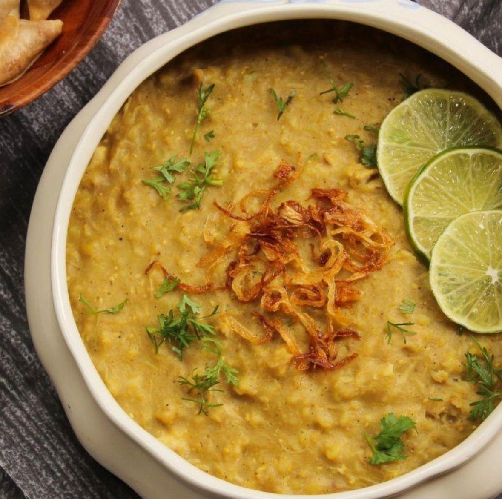
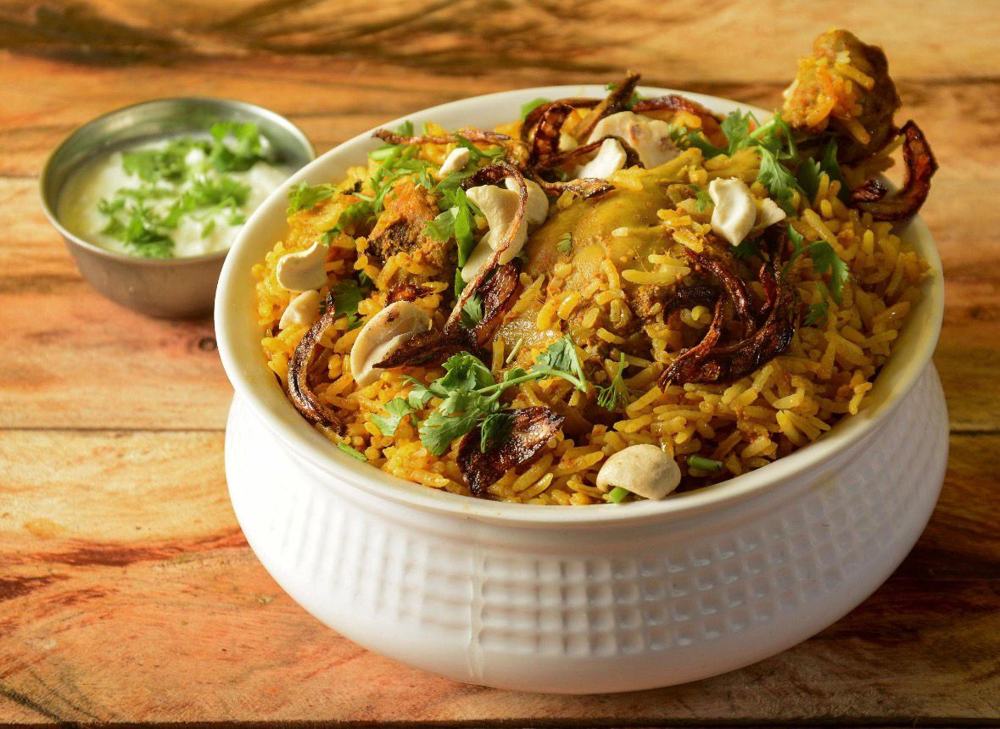
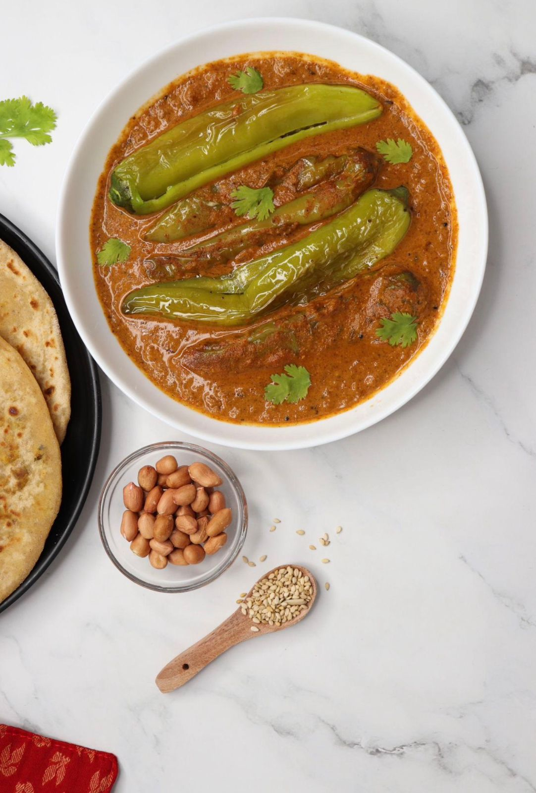
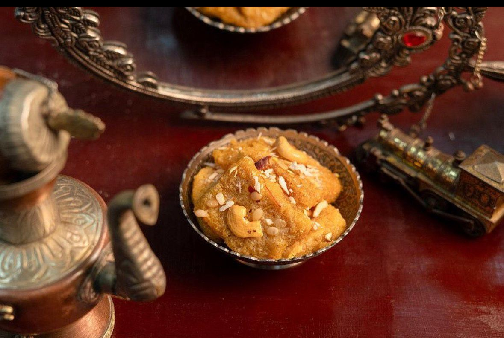
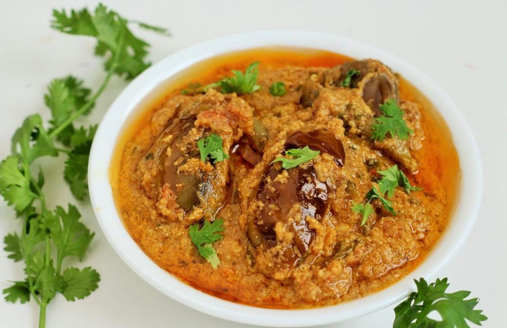

Haleem
Ingredients: Wheat, meat, lentils, spices
Description: A rich and hearty dish made with wheat and meat, popular in Telangana.

Hyderabadi Biryani
Ingredients: Basmati rice, meat, yogurt, spices, saffron
Description: World-famous biryani with rich flavors and aromatic spices.

Jonna Rotte
Ingredients: Jowar flour, water, salt
Description: Traditional flatbread made from jowar, served with curries.

Qubani ka Meetha
Ingredients: Dried apricots, sugar, almonds, cream
Description: A sweet dessert made from dried apricots, popular in Hyderabad.

Bagara Baingan
Ingredients: Eggplant, peanuts, sesame seeds, spices
Description: A tangy and spicy eggplant curry, a staple in Telangana cuisine.